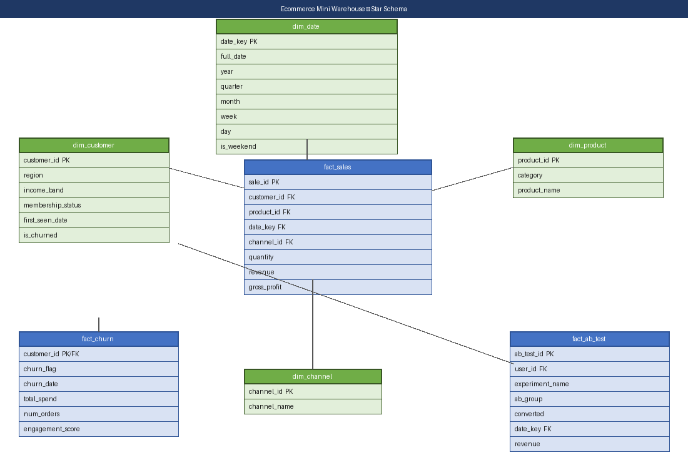

Project 6 · Data Engineering + BI
E-commerce Data Warehouse and Power BI Reporting
A PostgreSQL star-schema warehouse with ETL scripts, quality checks, and a Power BI semantic/report layer for churn, sales, and experiment analytics.
PostgreSQLSQL ETLPower BIDAXPytest
